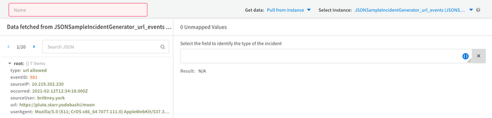
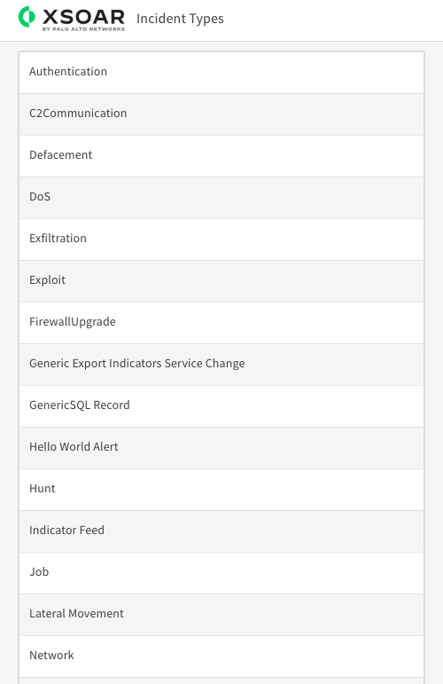
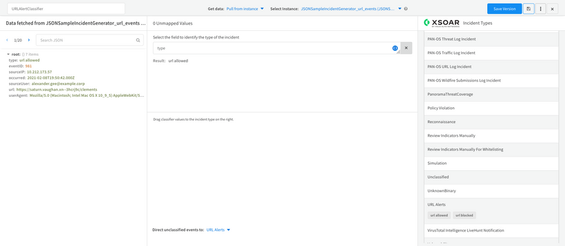
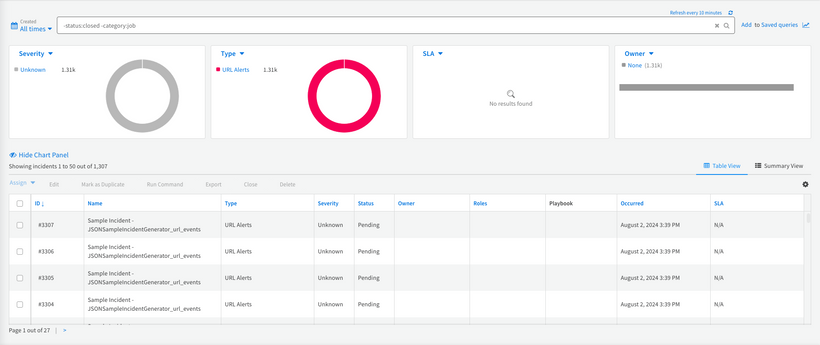
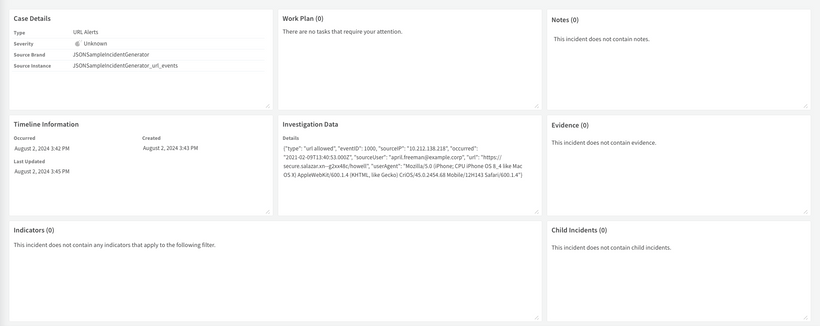

Configuring Incident Classification in Cortex XSOAR¶
In this post, we set up the classification feature, which transforms events into specific incident types. This guide expands on the content of the videos XSOAR Engineer Training - Part 2: Incident Types & Fields and XSOAR Engineer Training - Part 3: Classification and Mapping.
Set Up Incident Classifier¶
We navigate to Settings → Objects Setup → Classification & Mapping → New Incident Classifier. At the top, we select the JSONSampleIncidentGenerator_url_events instance we created in the previous post, so we can work with the sample events.

On the right, we see a list of the existing incident types in XSOAR:

A PAN-OS URL Log Incident type already exists, but our events do not originate from PAN-OS, so we create a new incident type specific to the data we are analyzing.
We go to Settings → Objects Setup → Incidents → Types and select PAN-OS URL Log Incident. With the Detach button, we can modify the object and explore its structure. After making our changes, we click Reattach to restore the original state.
Create a New Incident Type¶
We create a new incident type with the following settings:
- Name:
URL Alerts. - Run playbook automatically: set (best practice).
- Post process using: unset (script executed before closing the incident).
Now we define the fields that need to be populated. We go to Indicators Extraction Rules and check whether a field for URL categories exists. If it does not, we save and exit.
Create Custom Fields¶
We go to Settings → Objects Setup → Incidents → Incidents Fields and create two new custom fields:
- URL Category:
Short text. - Suspicious URL:
Short text.
We chose not to use the URL type because it would make the field clickable, which is not desirable for suspicious URLs: they should be treated as plain text.
Define Indicator Extraction Rules¶
We return to Settings → Objects Setup → Incidents → Types → URL Alerts → Edit → Indicators Extraction Rules. These rules define how indicators are extracted from each event and used to populate the incident. Indicator extraction can be:
- Inline: playbooks run after the indicator extraction is complete (blocking).
- Out of Band: indicator extraction and playbook execution run in parallel (non-blocking).
- None: no indicator extraction.
Best practices suggest using None when possible, and Inline when the playbook depends on the indicators.
We add the following fields:
- Suspicious URL: add
URLandDomain. - Source IP: add
IP. - Source Username: add
Email.
This way, the three fields generate the associated indicators: URL, Domain, IP and Email.
Finalize the Classifier¶
We go back to Settings → Objects Setup → Classification & Mapping → New Incident Classifier and select the JSONSampleIncidentGenerator_url_events instance.
When we select a sample event in the type field, we see options like url allowed and url blocked. We drag these two values to the right column, under the URL Alerts incident type. This categorizes all the url allowed and url blocked incidents as URL Alerts.

At the bottom, we can choose how to classify the events that do not fall into these categories. In our case it is unnecessary, but we select URL Alerts anyway.
We save the classifier as URLAlertClassifier.
Configure the Sample Incident Generator¶
We go to Settings → Integrations → Sample Incident Generator → ⚙️ and configure:
- Fetches incidents.
- Classifier:
URLAlertClassifier. - Incidents Fetch Interval:
00:01(the events from the JSON are generated every minute).
After a few minutes, we stop the fetching (Do not fetch) and go to Incidents:

The events are categorized as URL Alerts, but the indicators are not extracted correctly.

We delete all the incidents and move on to the next step.